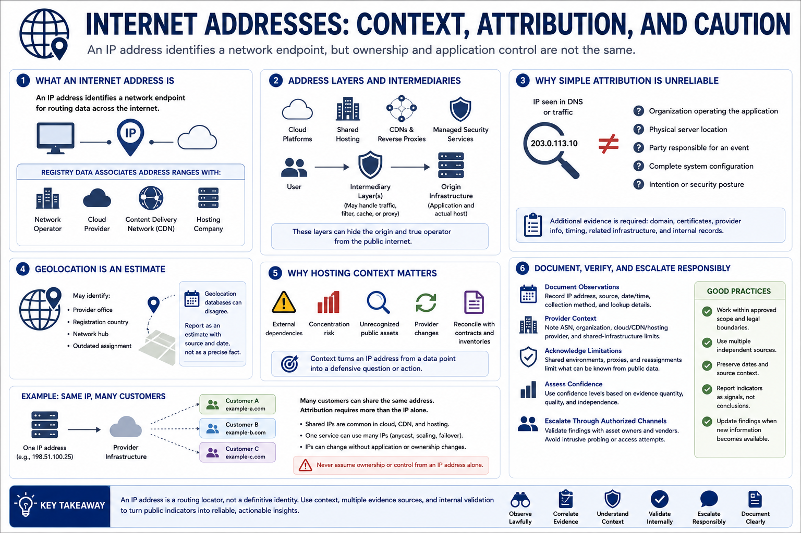

IP Addresses, Hosting, and Cloud Context
Connecting to LMS... Progress: in progress

Narration
An internet address identifies a network endpoint for routing, but public address ownership and application control are different concepts. Registry data may associate an address range with a network operator, cloud provider, content-delivery network, or hosting company.
Cloud platforms allocate and reassign addresses. Shared hosting places multiple customers on the same infrastructure. Content-delivery networks and reverse proxies present provider addresses while shielding an origin. Managed security services may also stand between users and the application.
These layers make simple attribution unreliable. An address observed in DNS does not automatically identify the organization operating the application, the physical server location, or the party responsible for an event. Additional domain, certificate, provider, timing, and internal evidence is required.
Geolocation databases estimate location and can disagree. They may identify a provider office, registration country, network hub, or outdated assignment rather than the system's physical position. Report geolocation as an estimate with source and date, not as a precise fact.
Hosting context remains useful for defensive work. It can reveal external dependencies, concentration risk, provider changes, unrecognized public assets, or infrastructure that should be reconciled with contracts and inventories.
Document observed addresses, source dates, provider context, shared-infrastructure limitations, and confidence. Avoid intrusive probing or access attempts. Escalate questions through authorized asset owners and vendors so public indicators are validated against operational records.